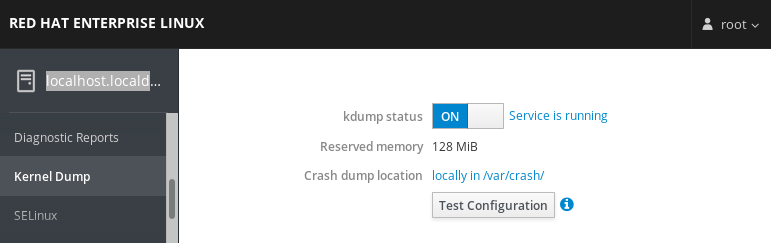
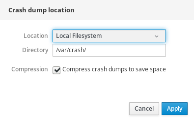
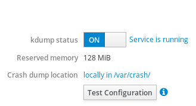
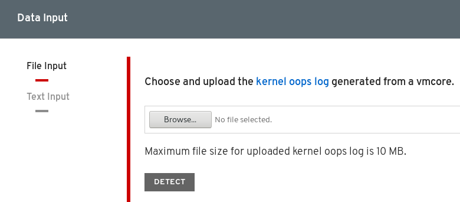

Managing, monitoring and updating the kernel
A guide to managing the Linux kernel on Red Hat Enterprise Linux 8
Abstract
Providing feedback on Red Hat documentation
We appreciate your input on our documentation. Please let us know how we could make it better. To do so:
- For simple comments on specific passages, make sure you are viewing the documentation in the Multi-page HTML format. Highlight the part of text that you want to comment on. Then, click the Add Feedback pop-up that appears below the highlighted text, and follow the displayed instructions.
For submitting more complex feedback, create a Bugzilla ticket:
- Go to the Bugzilla website.
- As the Component, use Documentation.
- Fill in the Description field with your suggestion for improvement. Include a link to the relevant part(s) of documentation.
- Click Submit Bug.
Chapter 1. The Linux kernel RPM
The following sections describe the Linux kernel RPM package provided and maintained by Red Hat.
1.1. What an RPM is
An RPM package is a file containing other files and their metadata (information about the files that are needed by the system).
Specifically, an RPM package consists of the cpio archive.
The cpio archive contains:
- Files
RPM header (package metadata)
The
rpmpackage manager uses this metadata to determine dependencies, where to install files, and other information.
Types of RPM packages
There are two types of RPM packages. Both types share the file format and tooling, but have different contents and serve different purposes:
Source RPM (SRPM)
An SRPM contains source code and a SPEC file, which describes how to build the source code into a binary RPM. Optionally, the patches to source code are included as well.
Binary RPM
A binary RPM contains the binaries built from the sources and patches.
1.2. The Linux kernel RPM package overview
The kernel RPM is a meta package that does not contain any files, but rather ensures that the following sub-packages are properly installed:
-
kernel-core- contains a minimal number of kernel modules needed for core functionality. This sub-package alone could be used in virtualized and cloud environments to provide a Red Hat Enterprise Linux 8 kernel with a quick boot time and a small disk size footprint. -
kernel-modules- contains further kernel modules. -
kernel-modules-extra- contains kernel modules for rare hardware.
The small set of kernel sub-packages above aims to provide a reduced maintenance surface to system administrators especially in virtualized and cloud environments.
The other common kernel packages are for example:
-
kernel-debug— Contains a kernel with numerous debugging options enabled for kernel diagnosis, at the expense of reduced performance. -
kernel-tools— Contains tools for manipulating the Linux kernel and supporting documentation. -
kernel-devel— Contains the kernel headers and makefiles sufficient to build modules against thekernelpackage. -
kernel-abi-whitelists— Contains information pertaining to the Red Hat Enterprise Linux kernel ABI, including a list of kernel symbols that are needed by external Linux kernel modules and ayumplug-in to aid enforcement. -
kernel-headers— Includes the C header files that specify the interface between the Linux kernel and user-space libraries and programs. The header files define structures and constants that are needed for building most standard programs.
1.3. Displaying contents of the kernel package
The following procedure describes how to view the contents of the kernel package and its sub-packages without installing them using the rpm command.
Prerequisites
-
Obtained
kernel,kernel-core,kernel-modules,kernel-modules-extraRPM packages for your CPU architecture
Procedure
List modules for
kernel:$ rpm -qlp <kernel_rpm>(contains no files) …List modules for
kernel-core:$ rpm -qlp <kernel-core_rpm>… /lib/modules/4.18.0-80.el8.x86_64/kernel/fs/udf/udf.ko.xz /lib/modules/4.18.0-80.el8.x86_64/kernel/fs/xfs /lib/modules/4.18.0-80.el8.x86_64/kernel/fs/xfs/xfs.ko.xz /lib/modules/4.18.0-80.el8.x86_64/kernel/kernel /lib/modules/4.18.0-80.el8.x86_64/kernel/kernel/trace /lib/modules/4.18.0-80.el8.x86_64/kernel/kernel/trace/ring_buffer_benchmark.ko.xz /lib/modules/4.18.0-80.el8.x86_64/kernel/lib /lib/modules/4.18.0-80.el8.x86_64/kernel/lib/cordic.ko.xz …List modules for
kernel-modules:$ rpm -qlp <kernel-modules_rpm>… /lib/modules/4.18.0-80.el8.x86_64/kernel/drivers/infiniband/hw/mlx4/mlx4_ib.ko.xz /lib/modules/4.18.0-80.el8.x86_64/kernel/drivers/infiniband/hw/mlx5/mlx5_ib.ko.xz /lib/modules/4.18.0-80.el8.x86_64/kernel/drivers/infiniband/hw/qedr/qedr.ko.xz /lib/modules/4.18.0-80.el8.x86_64/kernel/drivers/infiniband/hw/usnic/usnic_verbs.ko.xz /lib/modules/4.18.0-80.el8.x86_64/kernel/drivers/infiniband/hw/vmw_pvrdma/vmw_pvrdma.ko.xz …List modules for
kernel-modules-extra:$ rpm -qlp <kernel-modules-extra_rpm>… /lib/modules/4.18.0-80.el8.x86_64/extra/net/sched/sch_cbq.ko.xz /lib/modules/4.18.0-80.el8.x86_64/extra/net/sched/sch_choke.ko.xz /lib/modules/4.18.0-80.el8.x86_64/extra/net/sched/sch_drr.ko.xz /lib/modules/4.18.0-80.el8.x86_64/extra/net/sched/sch_dsmark.ko.xz /lib/modules/4.18.0-80.el8.x86_64/extra/net/sched/sch_gred.ko.xz …
Additional resources
-
For information on how to use the
rpmcommand on already installedkernelRPM, including its sub-packages, see therpm(8)manual page. - Introduction to RPM packages
Chapter 2. Updating kernel with yum
The following sections bring information about the Linux kernel provided and maintained by Red Hat (Red Hat kernel), and how to keep the Red Hat kernel updated. As a consequence, the operating system will have all the latest bug fixes, performance enhancements, and patches ensuring compatibility with new hardware.
2.1. What is the kernel
The kernel is a core part of a Linux operating system, which manages the system resources, and provides interface between hardware and software applications. The Red Hat kernel is a custom-built kernel based on the upstream Linux mainline kernel that Red Hat engineers further develop and harden with a focus on stability and compatibility with the latest technologies and hardware.
Before Red Hat releases a new kernel version, the kernel needs to pass a set of rigorous quality assurance tests.
The Red Hat kernels are packaged in the RPM format so that they are easy to upgrade and verify by the yum package manager.
Kernels that have not been compiled by Red Hat are not supported by Red Hat.
2.2. What is yum
This section refers to description of the yum package manager.
Additional resources
-
For more information on
yumsee the relevant sections of Configuring basic system settings.
2.3. Updating the kernel
The following procedure describes how to update the kernel using the yum package manager.
Procedure
To update the kernel, use the following:
# yumupdatekernelThis command updates the kernel along with all dependencies to the latest available version.
- Reboot your system for the changes to take effect.
When upgrading from Red Hat Enterprise Linux 7 to Red Hat Enterprise Linux 8, follow relevant sections of the Upgrading to RHEL 8 document.
2.4. Installing the kernel
The following procedure describes how to install new kernels using the yum package manager.
Procedure
To install a specific kernel version, use the following:
# yuminstallkernel-{version}
Additional resources
- For a list of available kernels, refer to Red Hat Code Browser.
- For a list of release dates of specific kernel versions, see this article.
Chapter 3. Managing kernel modules
The following sections explain what kernel modules are, how to display their information, and how to perform basic administrative tasks with kernel modules.
3.1. Introduction to kernel modules
The Red Hat Enterprise Linux kernel can be extended with optional, additional pieces of functionality, called kernel modules, without having to reboot the system. On Red Hat Enterprise Linux 8, kernel modules are extra kernel code which is built into compressed <KERNEL_MODULE_NAME>.ko.xz object files.
The most common functionality enabled by kernel modules are:
- Device driver which adds support for new hardware
-
Support for a file system such as
GFS2orNFS - System calls
On modern systems, kernel modules are automatically loaded when needed. However, in some cases it is necessary to load or unload modules manually.
Like the kernel itself, the modules can take parameters that customize their behavior if needed.
Tooling is provided to inspect which modules are currently running, which modules are available to load into the kernel and which parameters a module accepts. The tooling also provides a mechanism to load and unload kernel modules into the running kernel.
3.2. Kernel module dependencies
Certain kernel modules sometimes depend on one or more other kernel modules. The /lib/modules/<KERNEL_VERSION>/modules.dep file contains a complete list of kernel module dependencies for the respective kernel version.
The dependency file is generated by the depmod program, which is a part of the kmod package. Many of the utilities provided by kmod take module dependencies into account when performing operations so that manual dependency-tracking is rarely necessary.
The code of kernel modules is executed in kernel-space in the unrestricted mode. Because of this, you should be mindful of what modules you are loading.
Additional resources
-
For more information about
/lib/modules/<KERNEL_VERSION>/modules.dep, refer to themodules.dep(5)manual page. -
For further details including the synopsis and options of
depmod, see thedepmod(8)manual page.
3.3. Listing currently loaded kernel modules
The following procedure describes how to view the currently loaded kernel modules.
Prerequisites
-
The
kmodpackage is installed.
Procedure
To list all currently loaded kernel modules, execute:
$ lsmod Module Size Used by fuse 126976 3 uinput 20480 1 xt_CHECKSUM 16384 1 ipt_MASQUERADE 16384 1 xt_conntrack 16384 1 ipt_REJECT 16384 1 nft_counter 16384 16 nf_nat_tftp 16384 0 nf_conntrack_tftp 16384 1 nf_nat_tftp tun 49152 1 bridge 192512 0 stp 16384 1 bridge llc 16384 2 bridge,stp nf_tables_set 32768 5 nft_fib_inet 16384 1 …
In the example above:
- The first column provides the names of currently loaded modules.
- The second column displays the amount of memory per module in kilobytes.
- The last column shows the number, and optionally the names of modules that are dependent on a particular module.
Additional resources
-
For more information about
kmod, refer to the/usr/share/doc/kmod/READMEfile or thelsmod(8)manual page.
3.4. Displaying information about kernel modules
When working with a kernel module, you may want to see further information about that module. This procedure describes how to display extra information about kernel modules.
Prerequisites
-
The
kmodpackage is installed.
Procedure
To display information about any kernel module, execute:
$ modinfo <KERNEL_MODULE_NAME> For example: $ modinfo virtio_net filename: /lib/modules/4.18.0-94.el8.x86_64/kernel/drivers/net/virtio_net.ko.xz license: GPL description: Virtio network driver rhelversion: 8.1 srcversion: 2E9345B281A898A91319773 alias: virtio:d00000001v* depends: net_failover intree: Y name: virtio_net vermagic: 4.18.0-94.el8.x86_64 SMP mod_unload modversions … parm: napi_weight:int parm: csum:bool parm: gso:bool parm: napi_tx:boolThe
modinfocommand displays some detailed information about the specified kernel module. You can query information about all available modules, regardless of whether they are loaded or not. Theparmentries show parameters the user is able to set for the module, and what type of value they expect.NoteWhen entering the name of a kernel module, do not append the
.ko.xzextension to the end of the name. Kernel module names do not have extensions; their corresponding files do.
Additional resources
-
For more information about the
modinfo, refer to themodinfo(8)manual page.
3.5. Loading kernel modules at system runtime
The optimal way to expand the functionality of the Linux kernel is by loading kernel modules. The following procedure describes how to use the modprobe command to find and load a kernel module into the currently running kernel.
Prerequisites
- Root permissions
-
The
kmodpackage is installed. - The respective kernel module is not loaded. To ensure this is the case, list the loaded kernel modules.
Procedure
Select a kernel module you want to load.
The modules are located in the
/lib/modules/$(uname -r)/kernel/<SUBSYSTEM>/directory.Load the relevant kernel module:
# modprobe <MODULE_NAME>NoteWhen entering the name of a kernel module, do not append the
.ko.xzextension to the end of the name. Kernel module names do not have extensions; their corresponding files do.Optionally, verify the relevant module was loaded:
$ lsmod | grep <MODULE_NAME>If the module was loaded correctly, this command displays the relevant kernel module. For example:
$ lsmod | grep serio_raw serio_raw 16384 0
The changes described in this procedure will not persist after rebooting the system.
Additional resources
-
For further details about
modprobe, see themodprobe(8)manual page.
3.6. Unloading kernel modules at system runtime
At times, you find that you need to unload certain kernel modules from the running kernel. The following procedure describes how to use the modprobe command to find and unload a kernel module at system runtime from the currently loaded kernel.
Prerequisites
- Root permissions
-
The
kmodpackage is installed.
Procedure
Execute the
lsmodcommand and select a kernel module you want to unload.If a kernel module has dependencies, unload those prior to unloading the kernel module. For details on identifying modules with dependencies, see Section 3.3, “Listing currently loaded kernel modules”.
Unload the relevant kernel module:
# modprobe -r <MODULE_NAME>When entering the name of a kernel module, do not append the
.ko.xzextension to the end of the name. Kernel module names do not have extensions; their corresponding files do.WarningDo not unload kernel modules when they are used by the running system. Doing so can lead to an unstable or non-operational system.
Optionally, verify the relevant module was unloaded:
$ lsmod | grep <MODULE_NAME>If the module was unloaded successfully, this command does not display any output.
After finishing this procedure, the kernel modules that are defined to be automatically loaded on boot, will not stay unloaded after rebooting the system. For information on how to counter this outcome, see Preventing kernel modules from being automatically loaded at system boot time.
Additional resources
-
For further details about
modprobe, see themodprobe(8)manual page.
3.7. Loading kernel modules automatically at system boot time
The following procedure describes how to configure a kernel module so that it is loaded automatically during the boot process.
Prerequisites
- Root permissions
-
The
kmodpackage is installed.
Procedure
Select a kernel module you want to load during the boot process.
The modules are located in the
/lib/modules/$(uname -r)/kernel/<SUBSYSTEM>/directory.Create a configuration file for the module:
# echo <MODULE_NAME> > /etc/modules-load.d/<MODULE_NAME>.conf
NoteWhen entering the name of a kernel module, do not append the
.ko.xzextension to the end of the name. Kernel module names do not have extensions; their corresponding files do.Optionally, after reboot, verify the relevant module was loaded:
$ lsmod | grep <MODULE_NAME>The example command above should succeed and display the relevant kernel module.
The changes described in this procedure will persist after rebooting the system.
Additional resources
-
For further details about loading kernel modules during the boot process, see the
modules-load.d(5)manual page.
3.8. Preventing kernel modules from being automatically loaded at system boot time
The following procedure describes how to add a kernel module to a blacklist so that it will not be automatically loaded during the boot process.
Prerequisites
- Root permissions
-
The
kmodpackage is installed. - Ensure that a blacklisted kernel module is not vital for your current system configuration.
Procedure
Select a kernel module that you want to blacklist:
$ lsmod Module Size Used by fuse 126976 3 xt_CHECKSUM 16384 1 ipt_MASQUERADE 16384 1 uinput 20480 1 xt_conntrack 16384 1 …
The
lsmodcommand displays a list of modules loaded to the currently running kernel.Alternatively, identify an unloaded kernel module you want to prevent from potentially loading.
All kernel modules are located in the
/lib/modules/<KERNEL_VERSION>/kernel/<SUBSYSTEM>/directory.
Create a blacklist configuration file:
# vim /etc/modprobe.d/blacklist.conf # Blacklists <KERNEL_MODULE_1> blacklist <MODULE_NAME_1> install <MODULE_NAME_1> /bin/false # Blacklists <KERNEL_MODULE_2> blacklist <MODULE_NAME_2> install <MODULE_NAME_2> /bin/false # Blacklists <KERNEL_MODULE_n> blacklist <MODULE_NAME_n> install <MODULE_NAME_n> /bin/false …
The example shows the contents of the
blacklist.conffile, edited by thevimeditor. Theblacklistline ensures that the relevant kernel module will not be automatically loaded during the boot process. Theblacklistcommand, however, does not prevent the module from being loaded as a dependency for another kernel module that is not blacklisted. Therefore theinstallline causes the/bin/falseto run instead of installing a module.The lines starting with a hash sign are comments to make the file more readable.
NoteWhen entering the name of a kernel module, do not append the
.ko.xzextension to the end of the name. Kernel module names do not have extensions; their corresponding files do.Create a backup copy of the current initial ramdisk image before rebuilding:
# cp /boot/initramfs-$(uname -r).img /boot/initramfs-$(uname -r).bak.$(date +%m-%d-%H%M%S).img
The command above creates a backup
initramfsimage in case the new version has an unexpected problem.Alternatively, create a backup copy of other initial ramdisk image which corresponds to the kernel version for which you want to blacklist kernel modules:
# cp /boot/initramfs-<SOME_VERSION>.img /boot/initramfs-<SOME_VERSION>.img.bak.$(date +%m-%d-%H%M%S)
Generate a new initial ramdisk image to reflect the changes:
# dracut -f -v
If you are building an initial ramdisk image for a different kernel version than you are currently booted into, specify both target
initramfsand kernel version:# dracut -f -v /boot/initramfs-<TARGET_VERSION>.img <CORRESPONDING_TARGET_KERNEL_VERSION>
Reboot the system:
$ reboot
The changes described in this procedure will take effect and persist after rebooting the system. Improper blacklisting of a key kernel module can result in an unstable or non-operational system.
Additional resources
-
For further details concerning the
dracututility, refer to thedracut(8)manual page.
Chapter 4. Configuring kernel command line parameters
Kernel command line parameters are a way to change the behavior of certain aspects of the Red Hat Enterprise Linux kernel at boot time. As a system administrator, you have full control over what options get set at boot. Certain kernel behaviors are only able to be set at boot time, so understanding how to make this changes is a key administration skill.
Opting to change the behavior of the system by modifying kernel command line parameters may have negative effects on your system. You should therefore test changes prior to deploying them in production. For further guidance, contact Red Hat Support.
4.1. What are kernel command line parameters
Kernel command line parameters are used for boot time configuration of:
- The Red Hat Enterprise Linux kernel
- The initial RAM disk
- The user space features
Kernel boot time parameters are often used to overwrite default values and for setting specific hardware settings.
By default, the kernel command line parameters for systems using the GRUB2 bootloader are defined in the kernelopts variable of the /boot/grub2/grubenv file for all kernel boot entries.
For IBM Z, the kernel command line parameters are stored in the boot entry config file because the zipl bootloader does not support environment variables. Thus, the kernelopts environment variable cannot be used.
Additional resources
-
For more information about what kernel command line parameters you can modify, see
kernel-command-line(7),bootparam(7)anddracut.cmdline(7)manual pages.
4.2. What is grubby
grubby is a utility for manipulating bootloader-specific configuration files.
You can use grubby also for changing the default boot entry, and for adding/removing arguments from a GRUB2 menu entry.
For more details see the grubby(8) manual page.
4.3. What are boot entries
A boot entry is a collection of options which are stored in a configuration file and tied to a particular kernel version. In practice, you have at least as many boot entries as your system has installed kernels. The boot entry configuration file is located in the /boot/loader/entries/ directory and can look like this:
6f9cc9cb7d7845d49698c9537337cedc-4.18.0-5.el8.x86_64.conf
The file name above consists of a machine ID stored in the /etc/machine-id file, and a kernel version.
The boot entry configuration file contains information about the kernel version, the initial ramdisk image, and the kernelopts environment variable, which contains the kernel command line parameters. The contents of a boot entry config can be seen below:
title Red Hat Enterprise Linux (4.18.0-74.el8.x86_64) 8.0 (Ootpa) version 4.18.0-74.el8.x86_64 linux /vmlinuz-4.18.0-74.el8.x86_64 initrd /initramfs-4.18.0-74.el8.x86_64.img $tuned_initrd options $kernelopts $tuned_params id rhel-20190227183418-4.18.0-74.el8.x86_64 grub_users $grub_users grub_arg --unrestricted grub_class kernel
The kernelopts environment variable is defined in the /boot/grub2/grubenv file.
4.4. Setting kernel command line parameters
This section explains how to change kernel command line parameters on the AMD64 and Intel 64 architectures, the 64-bit ARM architectures, and the little-endian variant of IBM Power Systems.
4.4.1. Changing kernel command line parameters for all boot entries
This procedure describes how to change kernel command line parameters for all boot entries on your system.
Prerequisites
- Introduction to kernel command line parameters
Procedure
Open the
/etc/default/grubfile with thevimeditor:# vim /etc/default/grub GRUB_TIMEOUT=5 GRUB_DISTRIBUTOR="$(sed 's, release .*$,,g' /etc/system-release)" GRUB_DEFAULT=saved GRUB_DISABLE_SUBMENU=true GRUB_TERMINAL_OUTPUT="console" GRUB_CMDLINE_LINUX="crashkernel=auto resume=/dev/mapper/rhel-swap rd.lvm.lv=rhel/root rd.lvm.lv=rhel/swap rhgb quiet" GRUB_DISABLE_RECOVERY="true" GRUB_ENABLE_BLSCFG=true
-
Add, edit, or remove a parameter on the
GRUB_CMDLINE_LINUXline. Update the GRUB2 configuration file:
# grub2-mkconfig -o /boot/grub2/grub.cfg
- Reboot your system for the changes to take effect.
As a result, the boot loader is reconfigured, and the kernel command line parameters that you specified are applied.
Additional resources
- For more information on how to modify the kernel parameters using the GRUB2 configuration file, see Editing a Menu Entry.
4.4.2. Changing kernel command line parameters for a single boot entry
This procedure describes how to change kernel command line parameters for a single boot entry on your system.
Prerequisites
- Introduction to kernel command line parameters
-
grubby(8)manual page
Procedure
To add a parameter execute the following:
# grubby --update-kernel=/boot/vmlinuz-$(uname -r) --args="<NEW_PARAMETER>"To remove a parameter use the following:
# grubby --update-kernel=/boot/vmlinuz-$(uname -r) --remove-args="<PARAMETER_TO_REMOVE>"
By default, there is the options parameter for each kernel boot entry, which is set to the kernelopts variable. This variable is defined in the /boot/grub2/grubenv configuration file.
When you use the grubby utility to modify a specific boot entry, the contents of the edited kernelopts are stored in the relevant kernel boot entry in /boot/loader/entries/<RELEVANT_KERNEL_BOOT_ENTRY.conf> and will override the value of kernelopts set in /boot/grub2/grubenv.
Additional resources
-
For further examples on how to use
grubbysee grubby tool.
Chapter 5. Configuring kernel parameters at runtime
As a system administrator, you can modify many facets of the Red Hat Enterprise Linux kernel’s behavior at runtime. This section describes how to configure kernel parameters at runtime by using the sysctl command and by modifying the configuration files in the /etc/sysctl.d/ and /proc/sys/ directories.
5.1. What are kernel parameters
Kernel parameters are tunable values which you can adjust while the system is running. There is no requirement to reboot or recompile the kernel for changes to take effect.
It is possible to address the kernel parameters through:
+ * The sysctl command * The virtual file system mounted at the /proc/sys/ directory * The configuration files in the /etc/sysctl.d/ directory
Tunables are divided into classes by the kernel subsystem. Red Hat Enterprise Linux has the following tunable classes:
Table 5.1. Table of sysctl classes
| Tunable class | Subsystem |
|---|---|
| abi | Execution domains and personalities |
| crypto | Cryptographic interfaces |
| debug | Kernel debugging interfaces |
| dev | Device-specific information |
| fs | Global and specific file system tunables |
| kernel | Global kernel tunables |
| net | Network tunables |
| sunrpc | Sun Remote Procedure Call (NFS) |
| user | User Namespace limits |
| vm | Tuning and management of memory, buffers, and cache |
Additional resources
-
For more information about
sysctl, seesysctl(8)manual pages. -
For more information about
/etc/sysctl.d/see,sysctl.d(5)manual pages.
5.2. Setting kernel parameters at runtime
Configuring kernel parameters on a production system requires careful planning. Unplanned changes may render the kernel unstable, requiring a system reboot. Verify that you are using valid options before changing any kernel values.
5.2.1. Configuring kernel parameters temporarily with sysctl
The following procedure describes how to use the sysctl command to temporarily set kernel parameters at runtime. The command is also useful for listing and filtering tunables.
Prerequisites
- Kernel parameters introduction
- Root permissions
Procedure
To list all parameters and their values, use the following:
# sysctl -aNoteThe
# sysctl -acommand displays kernel parameters, which can be adjusted at runtime and at boot time.To configure a parameter temporarily, use the command as in the following example:
# sysctl <TUNABLE_CLASS>.<PARAMETER>=<TARGET_VALUE>The sample command above changes the parameter value while the system is running. The changes take effect immediately, without a need for restart.
NoteThe changes return back to default after your system reboots.
Additional resources
-
For more information about
sysctl, see thesysctl(8)manual page. -
To permanently modify kernel parameters, either use the
sysctlcommand to write the values to the/etc/sysctl.conffile or make manual changes to the configuration files in the/etc/sysctl.d/directory.
5.2.2. Configuring kernel parameters permanently with sysctl
The following procedure describes how to use the sysctl command to permanently set kernel parameters.
Prerequisites
- Kernel parameters introduction
- Root permissions
Procedure
To list all parameters, use the following:
# sysctl -aThe command displays all kernel parameters that can be configured at runtime.
To configure a parameter permanently:
# sysctl -w <TUNABLE_CLASS>.<PARAMETER>=<TARGET_VALUE> >> /etc/sysctl.confThe sample command changes the tunable value and writes it to the
/etc/sysctl.conffile, which overrides the default values of kernel parameters. The changes take effect immediately and persistently, without a need for restart.
To permanently modify kernel parameters you can also make manual changes to the configuration files in the /etc/sysctl.d/ directory.
Additional resources
-
For more information about
sysctl, see thesysctl(8)andsysctl.conf(5)manual pages. -
For more information about using the configuration files in the
/etc/sysctl.d/directory to make permanent changes to kernel parameters, see Using configuration files in /etc/sysctl.d/ to adjust kernel parameters section.
5.2.3. Using configuration files in /etc/sysctl.d/ to adjust kernel parameters
The following procedure describes how to manually modify configuration files in the /etc/sysctl.d/ directory to permanently set kernel parameters.
Prerequisites
- Kernel parameters introduction
- Root permissions
Procedure
Create a new configuration file in
/etc/sysctl.d/:# vim /etc/sysctl.d/<some_file.conf>Include kernel parameters, one per line, as follows:
<TUNABLE_CLASS>.<PARAMETER>=<TARGET_VALUE><TUNABLE_CLASS>.<PARAMETER>=<TARGET_VALUE>- Save the configuration file.
Reboot the machine for the changes to take effect.
Alternatively, to apply changes without rebooting, execute:
# sysctl -p /etc/sysctl.d/<some_file.conf>The command enables you to read values from the configuration file, which you created earlier.
Additional resources
-
For more information about
sysctl, see thesysctl(8)manual page. -
For more information about
/etc/sysctl.d/, see thesysctl.d(5)manual page.
5.2.4. Configuring kernel parameters temporarily through /proc/sys/
The following procedure describes how to set kernel parameters temporarily through the files in the virtual file system /proc/sys/ directory.
Prerequisites
- Kernel parameters introduction
- Root permissions
Procedure
Identify a kernel parameter you want to configure:
# ls -l /proc/sys/<TUNABLE_CLASS>/The writable files returned by the command can be used to configure the kernel. The files with read-only permissions provide feedback on the current settings.
Assign a target value to the kernel parameter:
# echo <TARGET_VALUE> > /proc/sys/<TUNABLE_CLASS>/<PARAMETER>The command makes configuration changes that will disappear once the system is restarted.
Optionally, verify the value of the newly set kernel parameter:
# cat /proc/sys/<TUNABLE_CLASS>/<PARAMETER>
Additional resources
-
To permanently modify kernel parameters, either use the
sysctlcommand or make manual changes to the configuration files in the/etc/sysctl.d/directory.
5.3. Keeping kernel panic parameters disabled in virtualized environments
When configuring a virtualized environment in Red Hat Enterprise Linux 8 (RHEL 8), you should not enable the softlockup_panic and nmi_watchdog kernel parameters, as the virtualized environment may trigger a spurious soft lockup that should not require a system panic.
The following sections explain the reasons behind this advice by summarizing:
- What causes a soft lockup.
- Describing the kernel parameters that control a system’s behavior on a soft lockup.
- Explaining how soft lockups may be triggered in a virtualized environment.
5.3.1. What is a soft lockup
A soft lockup is a situation usually caused by a bug, when a task is executing in kernel space on a CPU without rescheduling. The task also does not allow any other task to execute on that particular CPU. As a result, a warning is displayed to a user through the system console. This problem is also referred to as the soft lockup firing.
Additional resources
- For a technical reason behind a soft lockup, example log messages, and other details, see the following Knowledge Article.
5.3.2. Parameters controlling kernel panic
The following kernel parameters can be set to control a system’s behavior when a soft lockup is detected.
- softlockup_panic
Controls whether or not the kernel will panic when a soft lockup is detected.
Type Value Effect Integer
0
kernel does not panic on soft lockup
Integer
1
kernel panics on soft lockup
By default, on RHEL8 this value is 0.
In order to panic, the system needs to detect a hard lockup first. The detection is controlled by the
nmi_watchdogparameter.- nmi_watchdog
Controls whether lockup detection mechanisms (
watchdogs) are active or not. This parameter is of integer type.Value Effect 0
disables lockup detector
1
enables lockup detector
The hard lockup detector monitors each CPU for its ability to respond to interrupts.
- watchdog_thresh
Controls frequency of watchdog
hrtimer, NMI events, and soft/hard lockup thresholds.Default threshold Soft lockup threshold 10 seconds
2 *
watchdog_threshSetting this parameter to zero disables lockup detection altogether.
Additional resources
-
For further information about
nmi_watchdogandsoftlockup_panic, see the Softlockup detector and hardlockup detector document. -
For more details about
watchdog_thresh, see the Kernel sysctl document.
5.3.3. Spurious soft lockups in virtualized environments
The soft lockup firing on physical hosts, as described in Section 5.3.1, “What is a soft lockup”, usually represents a kernel or hardware bug. The same phenomenon happening on guest operating systems in virtualized environments may represent a false warning.
Heavy work-load on a host or high contention over some specific resource such as memory, usually causes a spurious soft lockup firing. This is because the host may schedule out the guest CPU for a period longer than 20 seconds. Then when the guest CPU is again scheduled to run on the host, it experiences a time jump which triggers due timers. The timers include also watchdog hrtimer, which can consequently report a soft lockup on the guest CPU.
Because a soft lockup in a virtualized environment may be spurious, you should not enable the kernel parameters that would cause a system panic when a soft lockup is reported on a guest CPU.
To understand soft lockups in guests, it is essential to know that the host schedules the guest as a task, and the guest then schedules its own tasks.
Additional resources
- For soft lockup definition and technicalities behind its functioning, see Section 5.3.1, “What is a soft lockup”.
- To learn about components of RHEL 8 virtualized environments and their interaction, see RHEL 8 virtual machine components and their interaction.
5.4. Adjusting kernel parameters for database servers
There are different sets of kernel parameters which can affect performance of specific database applications. The following sections explain what kernel parameters to configure to secure efficient operation of database servers and databases.
5.4.1. Introduction to database servers
A database server is a hardware device which has a certain amount of main memory, and a database (DB) application installed. This DB application provides services as a means of writing the cached data from the main memory, which is usually small and expensive, to DB files (database). These services are provided to multiple clients on a network. There can be as many DB servers as a machine’s main memory and storage allows.
Red Hat Enterprise Linux 8 provides the following database applications:
- MariaDB 10.3
- MySQL 8.0
- PostgreSQL 10
- PostgreSQL 9.6
5.4.2. Parameters affecting performance of database applications
The following kernel parameters affect performance of database applications.
- fs.aio-max-nr
Defines the maximum number of asynchronous I/O operations the system can handle on the server.
NoteRaising the
fs.aio-max-nrparameter produces no additional changes beyond increasing the aio limit.- fs.file-max
Defines the maximum number of file handles (temporary file names or IDs assigned to open files) the system supports at any instance.
The kernel dynamically allocates file handles whenever a file handle is requested by an application. The kernel however does not free these file handles when they are released by the application. The kernel recycles these file handles instead. This means that over time the total number of allocated file handles will increase even though the number of currently used file handles may be low.
- kernel.shmall
-
Defines the total number of shared memory pages that can be used system-wide. To use the entire main memory, the value of the
kernel.shmallparameter should be ≤ total main memory size. - kernel.shmmax
- Defines the maximum size in bytes of a single shared memory segment that a Linux process can allocate in its virtual address space.
- kernel.shmmni
- Defines the maximum number of shared memory segments the database server is able to handle.
- net.ipv4.ip_local_port_range
- Defines the port range the system can use for programs which want to connect to a database server without a specific port number.
- net.core.rmem_default
- Defines the default receive socket memory through Transmission Control Protocol (TCP).
- net.core.rmem_max
- Defines the maximum receive socket memory through Transmission Control Protocol (TCP).
- net.core.wmem_default
- Defines the default send socket memory through Transmission Control Protocol (TCP).
- net.core.wmem_max
- Defines the maximum send socket memory through Transmission Control Protocol (TCP).
- vm.dirty_bytes / vm.dirty_ratio
-
Defines a threshold in bytes / in percentage of dirty-able memory at which a process generating dirty data is started in the
write()function.
Either vm.dirty_bytes or vm.dirty_ratio can be specified at a time.
- vm.dirty_background_bytes / vm.dirty_background_ratio
- Defines a threshold in bytes / in percentage of dirty-able memory at which the kernel tries to actively write dirty data to hard-disk.
Either vm.dirty_background_bytes or vm.dirty_background_ratio can be specified at a time.
- vm.dirty_writeback_centisecs
Defines a time interval between periodic wake-ups of the kernel threads responsible for writing dirty data to hard-disk.
This kernel parameters measures in 100th’s of a second.
- vm.dirty_expire_centisecs
Defines the time after which dirty data is old enough to be written to hard-disk.
This kernel parameters measures in 100th’s of a second.
Additional resources
- For explanation of dirty data writebacks, how they work, and what kernel parameters relate to them, see the Dirty pagecache writeback and vm.dirty parameters document.
Chapter 6. Getting started with kernel logging
Log files are files that contain messages about the system, including the kernel, services, and applications running on it. The logging system in Red Hat Enterprise Linux is based on the built-in syslog protocol. Various utilities use this system to record events and organize them into log files. These files are useful when auditing the operating system or troubleshooting problems.
6.1. What is the kernel ring buffer
During the boot process, the console provides a lot of important information about the initial phase of the system startup. To avoid loss of the early messages the kernel utilizes what is called a ring buffer. This buffer stores all messages, including boot messages, generated by the printk() function within the kernel code. The messages from the kernel ring buffer are then read and stored in log files on permanent storage, for example, by the syslog service.
The buffer mentioned above is a cyclic data structure which has a fixed size, and is hard-coded into the kernel. Users can display data stored in the kernel ring buffer through the dmesg command or the /var/log/boot.log file. When the ring buffer is full, the new data overwrites the old.
Additional resources
-
For more information about
syslog, see thesyslog(2)manual page. -
For more details on how to examine or control boot log messages with
dmesg, see thedmesg(1)manual page.
6.2. Role of printk on log-levels and kernel logging
Each message the kernel reports has a log-level associated with it that defines the importance of the message. The kernel ring buffer, as described in Section 6.1, “What is the kernel ring buffer”, collects kernel messages of all log-levels. It is the kernel.printk parameter that defines what messages from the buffer are printed to the console.
The log-level values break down in this order:
- 0 — Kernel emergency. The system is unusable.
- 1 — Kernel alert. Action must be taken immediately.
- 2 — Condition of the kernel is considered critical.
- 3 — General kernel error condition.
- 4 — General kernel warning condition.
- 5 — Kernel notice of a normal but significant condition.
- 6 — Kernel informational message.
- 7 — Kernel debug-level messages.
By default, kernel.printk in RHEL 8 contains the following four values:
# sysctl kernel.printk kernel.printk = 7 4 1 7
The four values define the following:
- value. Console log-level, defines the lowest priority of messages printed to the console.
- value. Default log-level for messages without an explicit log-level attached to them.
- value. Sets the lowest possible log-level configuration for the console log-level.
value. Sets default value for the console log-level at boot time.
Each of these values above defines a different rule for handling error messages.
Certain kernel command line parameters, such as quiet or debug, change the default kernel.printk values.
Additional resources
-
For more information on
kernel.printkand log-levels, see thesyslog(2)manual page.
Chapter 7. Installing and configuring kdump
7.1. What is kdump
kdump is a service providing a crash dumping mechanism. The service enables you to save the contents of the system’s memory for later analysis. kdump uses the kexec system call to boot into the second kernel (a capture kernel) without rebooting; and then captures the contents of the crashed kernel’s memory (a crash dump or a vmcore) and saves it. The second kernel resides in a reserved part of the system memory.
A kernel crash dump can be the only information available in the event of a system failure (a critical bug). Therefore, ensuring that kdump is operational is important in mission-critical environments. Red Hat advise that system administrators regularly update and test kexec-tools in your normal kernel update cycle. This is especially important when new kernel features are implemented.
7.2. Installing kdump
In many cases, the kdump service is installed and activated by default on the new Red Hat Enterprise Linux installations. The Anaconda installer provides a screen for kdump configuration when performing an interactive installation using the graphical or text interface. The installer screen is titled Kdump and is available from the main Installation Summary screen, and only allows limited configuration - you can only select whether kdump is enabled and how much memory is reserved.
Some installation options, such as custom Kickstart installations, in some cases do not install or enable kdump by default. If this is the case on your system, follow the procedure below to install kdump.
Prerequisites
- An active Red Hat Enterprise Linux subscription
- A repository containing the kexec-tools package for your system CPU architecture
-
Fulfilled
kdumprequirements
Procedure
Execute the following command to check whether
kdumpis installed on your system:$rpm -q kexec-toolsOutput if the package is installed:
kexec-tools-2.0.17-11.el8.x86_64Output if the package is not installed:
package kexec-tools is not installedInstall
kdumpand other necessary packages by:#yum install kexec-tools
Starting with Red Hat Enterprise Linux 7.4 (kernel-3.10.0-693.el7) the Intel IOMMU driver is supported with kdump. For prior versions, Red Hat Enterprise Linux 7.3 (kernel-3.10.0-514[.XYZ].el7) and earlier, it is advised that Intel IOMMU support is disabled, otherwise kdump kernel is likely to become unresponsive.
Additional resources
-
Information about memory requirements for
kdumpis available in Section 7.5.1, “Memory requirements for kdump”.
7.3. Configuring kdump on the command line
7.3.1. Configuring kdump memory usage
The memory reserved for the kdump feature is always reserved during the system boot. The amount of memory is specified in the system’s Grand Unified Bootloader (GRUB) 2 configuration. The procedure below describes how to configure the memory reserved for kdump through the command line.
Prerequisites
-
Fulfilled
kdumprequirements
Procedure
-
Edit the
/etc/default/grubfile using the root permissions. Set the
crashkernel=option to the required value.For example, to reserve 128 MB of memory, use the following:
crashkernel=128M
Alternatively, you can set the amount of reserved memory to a variable depending on the total amount of installed memory. The syntax for memory reservation into a variable is
crashkernel=<range1>:<size1>,<range2>:<size2>. For example:crashkernel=512M-2G:64M,2G-:128M
The above example reserves 64 MB of memory if the total amount of system memory is 512 MB or higher and lower than 2 GB. If the total amount of memory is more than 2 GB, 128 MB is reserved for
kdumpinstead.Offset the reserved memory.
Some systems require to reserve memory with a certain fixed offset since crashkernel reservation is very early, and it wants to reserve some area for special usage. If the offset is set, the reserved memory begins there. To offset the reserved memory, use the following syntax:
crashkernel=128M@16M
The example above means that
kdumpreserves 128 MB of memory starting at 16 MB (physical address 0x01000000). If the offset parameter is set to 0 or omitted entirely,kdumpoffsets the reserved memory automatically. This syntax can also be used when setting a variable memory reservation as described above; in this case, the offset is always specified last (for example,crashkernel=512M-2G:64M,2G-:128M@16M).
Use the following command to update the GRUB2 configuration file:
# grub2-mkconfig -o /boot/grub2/grub.cfg
The alternative way to configure memory for kdump is to append the crashkernel=<SOME_VALUE> parameter to the kernelopts variable with the grub2-editenv which will update all of your boot entries. Or you can use the grubby utility to update kernel command line parameters of just one entry.
Additional resources
-
The
crashkernel=option can be defined in multiple ways. Theautovalue enables automatic configuration of reserved memory based on the total amount of memory in the system, following the guidelines described in Section 7.5.1, “Memory requirements for kdump”. -
For more information on boot entries,
kernelopts, and how to work withgrub2-editenvandgrubbysee Chapter 4, Configuring kernel command line parameters.
7.3.2. Configuring the kdump target
When a kernel crash is captured, the core dump can be either stored as a file in a local file system, written directly to a device, or sent over a network using the NFS (Network File System) or SSH (Secure Shell) protocol. Only one of these options can be set at a time, and the default behavior is to store the vmcore file in the /var/crash/ directory of the local file system.
Prerequisites
-
Fulfilled
kdumprequirements
Procedure
To change the local directory in which the core dump is to be saved, as root, edit the /etc/kdump.conf configuration file as described below.
-
Remove the hash sign ("#") from the beginning of the
#path /var/crashline. Replace the value with the intended directory path. For example:
path /usr/local/cores
ImportantIn Red Hat Enterprise Linux 8, the directory defined as the kdump target using the
pathdirective must exist when thekdumpsystemd service is started - otherwise the service fails. This behavior is different from earlier releases of Red Hat Enterprise Linux, where the directory was being created automatically if it did not exist when starting the service.
To write the file to a different partition, as root, edit the /etc/kdump.conf configuration file as described below.
Remove the hash sign ("#") from the beginning of the
#ext4line, depending on your choice.-
device name (the
#ext4 /dev/vg/lv_kdumpline) -
file system label (the
#ext4 LABEL=/bootline) -
UUID (the
#ext4 UUID=03138356-5e61-4ab3-b58e-27507ac41937line)
-
device name (the
Change the file system type as well as the device name, label or UUID to the desired values. For example:
ext4 UUID=03138356-5e61-4ab3-b58e-27507ac41937
ImportantIt is recommended to specify storage devices using a
LABEL=orUUID=. Disk device names such as/dev/sda3are not guaranteed to be consistent across reboot.ImportantWhen dumping to Direct Access Storage Device (DASD) on IBM Z hardware, it is essential that the dump devices are correctly specified in
/etc/dasd.confbefore proceeding.
To write the dump directly to a device:
-
Remove the hash sign ("#") from the beginning of the
#raw /dev/vg/lv_kdumpline. Replace the value with the intended device name. For example:
raw /dev/sdb1
To store the dump to a remote machine using the NFS protocol:
-
Remove the hash sign ("#") from the beginning of the
#nfs my.server.com:/export/tmpline. Replace the value with a valid hostname and directory path. For example:
nfs penguin.example.com:/export/cores
To store the dump to a remote machine using the SSH protocol:
-
Remove the hash sign ("#") from the beginning of the
#ssh user@my.server.comline. - Replace the value with a valid username and hostname.
Include your
SSHkey in the configuration.-
Remove the hash sign from the beginning of the
#sshkey /root/.ssh/kdump_id_rsaline. Change the value to the location of a key valid on the server you are trying to dump to. For example:
ssh john@penguin.example.com sshkey /root/.ssh/mykey
-
Remove the hash sign from the beginning of the
Additional resources
- For a complete list of currently supported and unsupported targets sorted by type, see Section 7.5.3, “Supported kdump targets”.
- For information on how to configure an SSH server and set up a key-based authentication, see Configuring basic system settings in Red Hat Enterprise Linux.
7.3.3. Configuring the core collector
kdump uses a program specified as core collector to capture the vmcore. Currently, the only fully supported core collector is the makedumpfile utility. It has several configurable options, which affect the collection process. For example the extent of collected data, or whether the resulting vmcore should be compressed.
To enable and configure the core collector, follow the procedure below.
Prerequisites
-
Fulfilled
kdumprequirements
Procedure
-
As
root, edit the/etc/kdump.confconfiguration file and remove the hash sign ("#") from the beginning of the#core_collector makedumpfile -l --message-level 1 -d 31. Add the
-cparameter. For example:core_collector makedumpfile -c
The command above enables the dump file compression.
Add the
-d valueparameter. For example:core_collector makedumpfile -d 17 -c
The command above removes both zero and free pages from the dump. The value represents a bitmask, where each bit is associated with a certain type of memory pages and determines whether that type of pages will be collected. For description of respective bits see Section 7.5.4, “Supported kdump filtering levels”.
Additional resources
-
See the
makedumpfile(8)man page for a complete list of available options.
7.3.4. Configuring the kdump default failure responses
By default, when kdump fails to create a vmcore dump file at the target location specified in Section 7.3.2, “Configuring the kdump target”, the system reboots, and the dump is lost in the process. To change this behavior, follow the procedure below.
Prerequisites
-
Fulfilled
kdumprequirements
Procedure
-
As
root, remove the hash sign ("#") from the beginning of the#default shellline in the/etc/kdump.confconfiguration file. Replace the value with a desired action as described in Section 7.5.5, “Supported default failure responses”. For example:
default poweroff
7.3.5. Enabling and disabling the kdump service
To start the kdump service at boot time, follow the procedure below.
Prerequisites
-
Fulfilled
kdumprequirements. - All configuration is set up according to your needs.
Procedure
To enable the
kdumpservice, use the following command:# systemctlenablekdump.serviceThis enables the service for
multi-user.target.To start the service in the current session, use the following command:
# systemctlstartkdump.serviceTo stop the
kdumpservice, type the following command:# systemctlstopkdump.serviceTo disable the
kdumpservice, execute the following command:# systemctldisablekdump.service
Additional resources
-
For more information on
systemdand configuring services in general, see Configuring basic system settings in Red Hat Enterprise Linux.
7.4. Configuring kdump in the web console
The following sections provide an overview of how to setup and test the kdump configuration through the Red Hat Enterprise Linux web console. The web console is part of a default installation of Red Hat Enterprise Linux 8 and enables or disables the kdump service at boot time. Further, the web console conveniently enables you to configure the reserved memory for kdump; or to select the vmcore saving location in an uncompressed or compressed format.
Prerequisites
- See Red Hat Enterprise Linux web console for further details.
7.4.1. Configuring kdump memory usage and target location in web console
The procedure below shows you how to use the Kernel Dump tab in the Red Hat Enterprise Linux web console interface to configure the amount of memory that is reserved for the kdump kernel. The procedure also describes how to specify the target location of the vmcore dump file and how to test your configuration.
Prerequisites
- Introduction to operating the web console
Procedure
-
Open the
Kernel Dumptab and start thekdumpservice. -
Configure the
kdumpmemory usage through the command line. Click the link next to the
Crash dump locationoption.Select the
Local Filesystemoption from the drop-down and specify the directory you want to save the dump in.Alternatively, select the
Remote over SSHoption from the drop-down to send the vmcore to a remote machine using the SSH protocol.Fill the
Server,ssh key, andDirectoryfields with the remote machine address, ssh key location, and a target directory.Another choice is to select the
Remote over NFSoption from the drop-down and fill theMountfield to send the vmcore to a remote machine using the NFS protocol.NoteTick the
Compressioncheck box to reduce the size of the vmcore file.
Test your configuration by crashing the kernel.
WarningThis step disrupts execution of the kernel and results in a system crash and loss of data.
Additional resources
-
For a complete list of currently supported targets for
kdump, see Supported kdump targets. - For information on how to configure an SSH server and set up a key-based authentication, see Configuring basic system settings in Red Hat Enterprise Linux.
7.5. Supported kdump configurations and targets
7.5.1. Memory requirements for kdump
In order for kdump to be able to capture a kernel crash dump and save it for further analysis, a part of the system memory has to be permanently reserved for the capture kernel. When reserved, this part of the system memory is not available to the main kernel.
The memory requirements vary based on certain system parameters. One of the major factors is the system’s hardware architecture. To find out the exact machine architecture (such as Intel 64 and AMD64, also known as x86_64) and print it to standard output, use the following command:
$ uname -m
The table below contains a list of minimum memory requirements to automatically reserve a memory size for kdump. The size changes according to the system’s architecture and total available physical memory.
Table 7.1. Minimum Amount of Reserved Memory Required for kdump
| Architecture | Available Memory | Minimum Reserved Memory |
|---|---|---|
|
AMD64 and Intel 64 ( | 1 GB to 64 GB | 160 MB of RAM. |
| 64 GB to 1 TB | 256 MB of RAM. | |
| 1 TB and more | 512 MB of RAM. | |
|
64-bit ARM architecture ( | 2 GB and more | 512 MB of RAM. |
|
IBM Power Systems ( | 2 GB to 4 GB | 384 MB of RAM. |
| 4 GB to 16 GB | 512 MB of RAM. | |
| 16 GB to 64 GB | 1 GB of RAM. | |
| 64 GB to 128 GB | 2 GB of RAM. | |
| 128 GB and more | 4 GB of RAM. | |
|
IBM Z ( | 4 GB to 64 GB | 160 MB of RAM. |
| 64 GB to 1 TB | 256 MB of RAM. | |
| 1 TB and more | 512 MB of RAM. |
On many systems, kdump is able to estimate the amount of required memory and reserve it automatically. This behavior is enabled by default, but only works on systems that have more than a certain amount of total available memory, which varies based on the system architecture.
The automatic configuration of reserved memory based on the total amount of memory in the system is a best effort estimation. The actual required memory may vary due to other factors such as I/O devices. Using not enough of memory might cause that a debug kernel is not able to boot as a capture kernel in case of a kernel panic. To avoid this problem, sufficiently increase the crash kernel memory.
Additional resources
- For information on how to change memory settings on the command line, see Section 7.3.1, “Configuring kdump memory usage”.
- For instructions on how to set up the amount of reserved memory through the web console, see Section 7.4.1, “Configuring kdump memory usage and target location in web console”.
- For more information about various Red Hat Enterprise Linux technology capabilities and limits, see the technology capabilities and limits tables.
7.5.2. Minimum threshold for automatic memory reservation
On some systems, it is possible to allocate memory for kdump automatically, either by using the crashkernel=auto parameter in the boot loader configuration file, or by enabling this option in the graphical configuration utility. For this automatic reservation to work, however, a certain amount of total memory needs to be available in the system. The amount differs based on the system’s architecture.
The table below lists the thresholds for automatic memory allocation. If the system has less memory than specified in the table, the memory needs to be reserved manually.
Table 7.2. Minimum Amount of Memory Required for Automatic Memory Reservation
| Architecture | Required Memory |
|---|---|
|
AMD64 and Intel 64 ( | 2 GB |
|
IBM Power Systems ( | 2 GB |
|
IBM Z ( | 4 GB |
Additional resources
- For information on how to manually change these settings on the command line, see Section 7.3.1, “Configuring kdump memory usage”.
- For instructions on how to manually change the amount of reserved memory through the web console, see Section 7.4.1, “Configuring kdump memory usage and target location in web console”.
7.5.3. Supported kdump targets
When a kernel crash is captured, the vmcore dump file can be either written directly to a device, stored as a file on a local file system, or sent over a network. The table below contains a complete list of dump targets that are currently supported or explicitly unsupported by kdump.
Table 7.3. Supported kdump Targets
| Type | Supported Targets | Unsupported Targets |
|---|---|---|
| Raw device | All locally attached raw disks and partitions. | |
| Local file system |
|
Any local file system not explicitly listed as supported in this table, including the |
| Remote directory |
Remote directories accessed using the |
Remote directories on the |
|
Remote directories accessed using the |
Remote directories accessed using the | Multipath-based storages. |
|
Remote directories accessed over | ||
|
Remote directories accessed using the | ||
|
Remote directories accessed using the | ||
| Remote directories accessed using wireless network interfaces. | ||
Additional resources
- For information on how to configure the target type on the command line, see Section 7.3.2, “Configuring the kdump target”.
- For information on how to configure the target through the web console, see Section 7.4.1, “Configuring kdump memory usage and target location in web console”.
7.5.4. Supported kdump filtering levels
To reduce the size of the dump file, kdump uses the makedumpfile core collector to compress the data and optionally to omit unwanted information. The table below contains a complete list of filtering levels that are currently supported by the makedumpfile utility.
Table 7.4. Supported Filtering Levels
| Option | Description |
|---|---|
|
| Zero pages |
|
| Cache pages |
|
| Cache private |
|
| User pages |
|
| Free pages |
The makedumpfile command supports removal of transparent huge pages and hugetlbfs pages. Consider both these types of hugepages User Pages and remove them using the -8 level.
Additional resources
- For instructions on how to configure the core collector on the command line, see Section 7.3.3, “Configuring the core collector”.
7.5.5. Supported default failure responses
By default, when kdump fails to create a core dump, the operating system reboots. You can, however, configure kdump to perform a different operation in case it fails to save the core dump to the primary target. The table below lists all default actions that are currently supported.
Table 7.5. Supported Default Actions
| Option | Description |
|---|---|
|
| Attempt to save the core dump to the root file system. This option is especially useful in combination with a network target: if the network target is unreachable, this option configures kdump to save the core dump locally. The system is rebooted afterwards. |
|
| Reboot the system, losing the core dump in the process. |
|
| Halt the system, losing the core dump in the process. |
|
| Power off the system, losing the core dump in the process. |
|
| Run a shell session from within the initramfs, allowing the user to record the core dump manually. |
Additional resources
- For detailed information on how to set up the default failure responses on the command line, see Section 7.3.4, “Configuring the kdump default failure responses”.
7.5.6. Estimating kdump size
When planning and building your kdump environment, it is necessary to know how much space is required for the dump file before one is produced.
The makedumpfile --mem-usage command provides a useful report about excludable pages, and can be used to determine which dump level you want to assign. Run this command when the system is under representative load, otherwise makedumpfile --mem-usage returns a smaller value than is expected in your production environment.
[root@hostname ~]# makedumpfile --mem-usage /proc/kcore TYPE PAGES EXCLUDABLE DESCRIPTION ---------------------------------------------------------------------- ZERO 501635 yes Pages filled with zero CACHE 51657 yes Cache pages CACHE_PRIVATE 5442 yes Cache pages + private USER 16301 yes User process pages FREE 77738211 yes Free pages KERN_DATA 1333192 no Dumpable kernel data
The makedumpfile --mem-usage command reports in pages. This means that you have to calculate the size of memory in use against the kernel page size. By default the Red Hat Enterprise Linux kernel uses 4 KB sized pages for AMD64 and Intel 64 architectures, and 64 KB sized pages for IBM POWER architectures.
7.6. Testing the kdump configuration
The following procedure describes how to test that the kernel dump process works and is valid before the machine enters production.
The commands below cause the kernel to crash. Use caution when following these steps, and never carelessly use them on active production system.
Procedure
-
Reboot the system with
kdumpenabled. Make sure that
kdumpis running:~]# systemctl is-active kdump active
Force the Linux kernel to crash:
echo 1 > /proc/sys/kernel/sysrqecho c > /proc/sysrq-triggerWarningThe command above crashes the kernel and a reboot is required.
Once booted again, the
address-YYYY-MM-DD-HH:MM:SS/vmcorefile is created at the location you have specified in/etc/kdump.conf(by default to/var/crash/).NoteIn addition to confirming the validity of the configuration, it is possible to use this action to record how long it takes for a crash dump to complete, while a representative load was running.
7.7. Analyzing a core dump
To determine the cause of the system crash, you can use the crash utility, which provides an interactive prompt very similar to the GNU Debugger (GDB). This utility allows you to interactively analyze a core dump created by kdump, netdump, diskdump or xendump as well as a running Linux system. Alternatively, you have the option to use the Kdump Helper or Kernel Oops Analyzer.
7.7.1. Installing the crash utility
The following procedure describes how to install the crash analyzing tool.
Procedure
Enable the relevant
baseosandappstreamrepositories:# subscription-manager repos --enable baseos repository# subscription-manager repos --enable appstream repositoryInstall the
crashpackage:# yum install crashInstall the
kernel-debuginfopackage:# yum install kernel-debuginfoThe package corresponds to your running kernel and provides the data necessary for the dump analysis.
Additional resources
-
For more information about how to work with repositories using the
subscription-managerutility, see Configuring basic system settings.
7.7.2. Running and exiting the crash utility
The following procedure describes how to start the crash utility for analyzing the cause of the system crash.
Prerequisites
-
Identify the currently running kernel (for example
4.18.0-5.el8.x86_64).
Procedure
To start the
crashutility, two necessary parameters need to be passed to the command:-
The debug-info (a decompressed vmlinuz image), for example
/usr/lib/debug/lib/modules/4.18.0-5.el8.x86_64/vmlinuxprovided through a specifickernel-debuginfopackage. The actual vmcore file, for example
/var/crash/127.0.0.1-2018-10-06-14:05:33/vmcoreThe resulting
crashcommand then looks like this:# crash /usr/lib/debug/lib/modules/4.18.0-5.el8.x86_64/vmlinux /var/crash/127.0.0.1-2018-10-06-14:05:33/vmcoreUse the same <kernel> version that was captured by
kdump.Example 7.1. Running the crash utility
The following example shows analyzing a core dump created on October 6 2018 at 14:05 PM, using the 4.18.0-5.el8.x86_64 kernel.
... WARNING: kernel relocated [202MB]: patching 90160 gdb minimal_symbol values KERNEL: /usr/lib/debug/lib/modules/4.18.0-5.el8.x86_64/vmlinux DUMPFILE: /var/crash/127.0.0.1-2018-10-06-14:05:33/vmcore [PARTIAL DUMP] CPUS: 2 DATE: Sat Oct 6 14:05:16 2018 UPTIME: 01:03:57 LOAD AVERAGE: 0.00, 0.00, 0.00 TASKS: 586 NODENAME: localhost.localdomain RELEASE: 4.18.0-5.el8.x86_64 VERSION: #1 SMP Wed Aug 29 11:51:55 UTC 2018 MACHINE: x86_64 (2904 Mhz) MEMORY: 2.9 GB PANIC: "sysrq: SysRq : Trigger a crash" PID: 10635 COMMAND: "bash" TASK: ffff8d6c84271800 [THREAD_INFO: ffff8d6c84271800] CPU: 1 STATE: TASK_RUNNING (SYSRQ) crash>
-
The debug-info (a decompressed vmlinuz image), for example
To exit the interactive prompt and terminate
crash, typeexitorq.Example 7.2. Exiting the crash utility
crash> exit ~]#
The crash command can also be used as a powerful tool for debugging a live system. However use it with caution so as not to break your system.
7.7.3. Displaying message buffer, backtrace, and other indicators in the crash utility
The following procedures describe how to use the crash utility and display various indicators, such as a kernel message buffer, a backtrace, a process status, virtual memory information and open files.
Displaying the message buffer
To display the kernel message buffer, type the
logcommand at the interactive prompt as displayed in the example below:Example 7.3. Displaying the kernel message buffer
crash> log ... several lines omitted ... EIP: 0060:[<c068124f>] EFLAGS: 00010096 CPU: 2 EIP is at sysrq_handle_crash+0xf/0x20 EAX: 00000063 EBX: 00000063 ECX: c09e1c8c EDX: 00000000 ESI: c0a09ca0 EDI: 00000286 EBP: 00000000 ESP: ef4dbf24 DS: 007b ES: 007b FS: 00d8 GS: 00e0 SS: 0068 Process bash (pid: 5591, ti=ef4da000 task=f196d560 task.ti=ef4da000) Stack: c068146b c0960891 c0968653 00000003 00000000 00000002 efade5c0 c06814d0 <0> fffffffb c068150f b7776000 f2600c40 c0569ec4 ef4dbf9c 00000002 b7776000 <0> efade5c0 00000002 b7776000 c0569e60 c051de50 ef4dbf9c f196d560 ef4dbfb4 Call Trace: [<c068146b>] ? __handle_sysrq+0xfb/0x160 [<c06814d0>] ? write_sysrq_trigger+0x0/0x50 [<c068150f>] ? write_sysrq_trigger+0x3f/0x50 [<c0569ec4>] ? proc_reg_write+0x64/0xa0 [<c0569e60>] ? proc_reg_write+0x0/0xa0 [<c051de50>] ? vfs_write+0xa0/0x190 [<c051e8d1>] ? sys_write+0x41/0x70 [<c0409adc>] ? syscall_call+0x7/0xb Code: a0 c0 01 0f b6 41 03 19 d2 f7 d2 83 e2 03 83 e0 cf c1 e2 04 09 d0 88 41 03 f3 c3 90 c7 05 c8 1b 9e c0 01 00 00 00 0f ae f8 89 f6 <c6> 05 00 00 00 00 01 c3 89 f6 8d bc 27 00 00 00 00 8d 50 d0 83 EIP: [<c068124f>] sysrq_handle_crash+0xf/0x20 SS:ESP 0068:ef4dbf24 CR2: 0000000000000000Type
help logfor more information on the command usage.NoteThe kernel message buffer includes the most essential information about the system crash and, as such, it is always dumped first in to the
vmcore-dmesg.txtfile. This is useful when an attempt to get the fullvmcorefile failed, for example because of lack of space on the target location. By default,vmcore-dmesg.txtis located in the/var/crash/directory.
7.7.3.1. Displaying a backtrace
To display the kernel stack trace, use the
btcommand.Example 7.4. Displaying the kernel stack trace
crash> bt PID: 5591 TASK: f196d560 CPU: 2 COMMAND: "bash" #0 [ef4dbdcc] crash_kexec at c0494922 #1 [ef4dbe20] oops_end at c080e402 #2 [ef4dbe34] no_context at c043089d #3 [ef4dbe58] bad_area at c0430b26 #4 [ef4dbe6c] do_page_fault at c080fb9b #5 [ef4dbee4] error_code (via page_fault) at c080d809 EAX: 00000063 EBX: 00000063 ECX: c09e1c8c EDX: 00000000 EBP: 00000000 DS: 007b ESI: c0a09ca0 ES: 007b EDI: 00000286 GS: 00e0 CS: 0060 EIP: c068124f ERR: ffffffff EFLAGS: 00010096 #6 [ef4dbf18] sysrq_handle_crash at c068124f #7 [ef4dbf24] __handle_sysrq at c0681469 #8 [ef4dbf48] write_sysrq_trigger at c068150a #9 [ef4dbf54] proc_reg_write at c0569ec2 #10 [ef4dbf74] vfs_write at c051de4e #11 [ef4dbf94] sys_write at c051e8cc #12 [ef4dbfb0] system_call at c0409ad5 EAX: ffffffda EBX: 00000001 ECX: b7776000 EDX: 00000002 DS: 007b ESI: 00000002 ES: 007b EDI: b7776000 SS: 007b ESP: bfcb2088 EBP: bfcb20b4 GS: 0033 CS: 0073 EIP: 00edc416 ERR: 00000004 EFLAGS: 00000246Type
bt <pid>to display the backtrace of a specific process or typehelp btfor more information onbtusage.
7.7.3.2. Displaying a process status
To display the status of processes in the system, use the
pscommand.Example 7.5. Displaying the status of processes in the system
crash>
psPID PPID CPU TASK ST %MEM VSZ RSS COMM > 0 0 0 c09dc560 RU 0.0 0 0 [swapper] > 0 0 1 f7072030 RU 0.0 0 0 [swapper] 0 0 2 f70a3a90 RU 0.0 0 0 [swapper] > 0 0 3 f70ac560 RU 0.0 0 0 [swapper] 1 0 1 f705ba90 IN 0.0 2828 1424 init ... several lines omitted ... 5566 1 1 f2592560 IN 0.0 12876 784 auditd 5567 1 2 ef427560 IN 0.0 12876 784 auditd 5587 5132 0 f196d030 IN 0.0 11064 3184 sshd > 5591 5587 2 f196d560 RU 0.0 5084 1648 bashUse
ps <pid>to display the status of a single specific process. Use help ps for more information onpsusage.
7.7.3.3. Displaying virtual memory information
To display basic virtual memory information, type the
vmcommand at the interactive prompt.Example 7.6. Displaying virtual memory information of the current context
crash> vm PID: 5591 TASK: f196d560 CPU: 2 COMMAND: "bash" MM PGD RSS TOTAL_VM f19b5900 ef9c6000 1648k 5084k VMA START END FLAGS FILE f1bb0310 242000 260000 8000875 /lib/ld-2.12.so f26af0b8 260000 261000 8100871 /lib/ld-2.12.so efbc275c 261000 262000 8100873 /lib/ld-2.12.so efbc2a18 268000 3ed000 8000075 /lib/libc-2.12.so efbc23d8 3ed000 3ee000 8000070 /lib/libc-2.12.so efbc2888 3ee000 3f0000 8100071 /lib/libc-2.12.so efbc2cd4 3f0000 3f1000 8100073 /lib/libc-2.12.so efbc243c 3f1000 3f4000 100073 efbc28ec 3f6000 3f9000 8000075 /lib/libdl-2.12.so efbc2568 3f9000 3fa000 8100071 /lib/libdl-2.12.so efbc2f2c 3fa000 3fb000 8100073 /lib/libdl-2.12.so f26af888 7e6000 7fc000 8000075 /lib/libtinfo.so.5.7 f26aff2c 7fc000 7ff000 8100073 /lib/libtinfo.so.5.7 efbc211c d83000 d8f000 8000075 /lib/libnss_files-2.12.so efbc2504 d8f000 d90000 8100071 /lib/libnss_files-2.12.so efbc2950 d90000 d91000 8100073 /lib/libnss_files-2.12.so f26afe00 edc000 edd000 4040075 f1bb0a18 8047000 8118000 8001875 /bin/bash f1bb01e4 8118000 811d000 8101873 /bin/bash f1bb0c70 811d000 8122000 100073 f26afae0 9fd9000 9ffa000 100073 ... several lines omitted ...Use
vm <pid>to display information on a single specific process, or usehelp vmfor more information onvmusage.
7.7.3.4. Displaying open files
To display information about open files, use the
filescommand.Example 7.7. Displaying information about open files of the current context
crash>
filesPID: 5591 TASK: f196d560 CPU: 2 COMMAND: "bash" ROOT: / CWD: /root FD FILE DENTRY INODE TYPE PATH 0 f734f640 eedc2c6c eecd6048 CHR /pts/0 1 efade5c0 eee14090 f00431d4 REG /proc/sysrq-trigger 2 f734f640 eedc2c6c eecd6048 CHR /pts/0 10 f734f640 eedc2c6c eecd6048 CHR /pts/0 255 f734f640 eedc2c6c eecd6048 CHR /pts/0Use
files <pid>to display files opened by only one selected process, or usehelp filesfor more information onfilesusage.
7.7.4. Using Kernel Oops Analyzer
The Kernel Oops Analyzer is a tool that analyzes the crash dump by comparing the oops messages with known issues in the knowledge base.
Prerequisites
- Secure an oops message to feed the Kernel Oops Analyzer by following instructions in Red Hat Labs.
Procedure
- Follow the Kernel Oops Analyzer link to access the tool.
Browse for the oops message by hitting the button.
-
Click the button to compare the oops message based on information from
makedumpfileagainst known solutions.
Additional resources
-
kdump.conf(5) — a manual page for the
/etc/kdump.confconfiguration file containing the full documentation of available options. -
zipl.conf(5) — a manual page for the
/etc/zipl.confconfiguration file. -
zipl(8) — a manual page for the
ziplboot loader utility for IBM System z. -
makedumpfile(8) — a manual page for the
makedumpfilecore collector. - kexec(8) — a manual page for kexec.
- crash(8) — a manual page for the crash utility.
-
/usr/share/doc/kexec-tools/kexec-kdump-howto.txt— an overview of thekdumpand kexec installation and usage. -
For more information about the
kexecandkdumpconfiguration see the Red Hat Knowledgebase article. -
For more information about the supported
kdumptargets see the Red Hat Knowledgebase article.
Chapter 8. Applying patches with kernel live patching
You can use the Red Hat Enterprise Linux kernel live patching solution to patch a running kernel without rebooting or restarting any processes.
With this solution, system administrators:
- Can immediately apply critical security patches to the kernel.
- Do not have to wait for long-running tasks to complete, for users to log off, or for scheduled downtime.
- Control the system’s uptime more and do not sacrifice security or stability.
Note that not every critical or important CVE will be resolved using the kernel live patching solution. Our goal is to reduce the required reboots for security-related patches, not to eliminate them entirely. For more details about the scope of live patching, see the Customer Portal Solutions article.
Some incompatibilities exist between kernel live patching and other kernel subcomponents. Read the Section 8.1, “Limitations of kpatch” carefully before using kernel live patching.
8.1. Limitations of kpatch
-
The
kpatchfeature is not a general-purpose kernel upgrade mechanism. It is used for applying simple security and bug fix updates when rebooting the system is not immediately possible. -
Do not use the
SystemTaporkprobetools during or after loading a patch. The patch could fail to take effect until after such probes have been removed.
8.2. Support for third-party live patching
The kpatch utility is the only kernel live patching utility supported by Red Hat with the RPM modules provided by Red Hat repositories. Red Hat will not support any live patches which were not provided by Red Hat itself.
If you require support for an issue that arises with a third-party live patch, Red Hat recommends that you open a case with the live patching vendor at the outset of any investigation in which a root cause determination is necessary. This allows the source code to be supplied if the vendor allows, and for their support organization to provide assistance in root cause determination prior to escalating the investigation to Red Hat Support.
For any system running with third-party live patches, Red Hat reserves the right to ask for reproduction with Red Hat shipped and supported software. In the event that this is not possible, we require a similar system and workload be deployed on your test environment without live patches applied, to confirm if the same behavior is observed.
For more information about third-party software support policies, see How does Red Hat Global Support Services handle third-party software, drivers, and/or uncertified hardware/hypervisors or guest operating systems?
8.3. Access to kernel live patches
Kernel live patching capability is implemented as a kernel module (kmod) that is delivered as an RPM package.
All customers have access to kernel live patches, which are delivered through the usual channels. However, customers who do not subscribe to an extended support offering will lose access to new patches for the current minor release once the next minor release becomes available. For example, customers with standard subscriptions will only be able to live patch RHEL 8.2 kernel until the RHEL 8.3 kernel is released.
8.4. Components of kernel live patching
The components of kernel live patching are as follows:
- Kernel patch module
- The delivery mechanism for kernel live patches.
- A kernel module which is built specifically for the kernel being patched.
- The patch module contains the code of the desired fixes for the kernel.
-
The patch modules register with the
livepatchkernel subsystem and provide information about original functions to be replaced, with corresponding pointers to the replacement functions. Kernel patch modules are delivered as RPMs. -
The naming convention is
kpatch_<kernel version>_<kpatch version>_<kpatch release>. The "kernel version" part of the name has dots and dashes replaced with underscores.
- The
kpatchutility - A command-line utility for managing patch modules.
- The
kpatchservice -
A
systemdservice required bymultiuser.target. This target loads the kernel patch module at boot time.
8.5. How kernel live patching works
The kpatch kernel patching solution uses the livepatch kernel subsystem to redirect old functions to new ones. When a live kernel patch is applied to a system, the following things happen:
-
The kernel patch module is copied to the
/var/lib/kpatch/directory and registered for re-application to the kernel bysystemdon next boot. -
The kpatch module is loaded into the running kernel and the new functions are registered to the
ftracemechanism with a pointer to the location in memory of the new code. -
When the kernel accesses the patched function, it is redirected by the
ftracemechanism which bypasses the original functions and redirects the kernel to patched version of the function.
Figure 8.1. How kernel live patching works
8.6. Enabling kernel live patching
A kernel patch module is delivered in an RPM package, specific to the version of the kernel being patched. Each RPM package will be cumulatively updated over time.
The following sections describe how to ensure you receive all future cumulative live patching updates for a given kernel.
Red Hat does not support any third party live patches applied to a Red Hat supported system.
8.6.1. Subscribing to the live patching stream
This procedure describes installing a particular live patching package. By doing so, you subscribe to the live patching stream for a given kernel and ensure that you receive all future cumulative live patching updates for that kernel.
Because live patches are cumulative, you cannot select which individual patches are deployed for a given kernel.
Prerequisites
- Root permissions
Procedure
Optionally, check your kernel version:
# uname -r 4.18.0-94.el8.x86_64
Search for a live patching package that corresponds to the version of your kernel:
# yum search $(uname -r)
Install the live patching package:
# yum install "kpatch-patch = $(uname -r)"
The command above installs and applies the latest cumulative live patches for that specific kernel only.
The live patching package contains a patch module, if the package’s version is 1-1 or higher. In that case the kernel will be automatically patched during the installation of the live patching package.
The kernel patch module is also installed into the
/var/lib/kpatch/directory to be loaded by thesystemdsystem and service manager during the future reboots.NoteIf there are not yet any live patches available for the given kernel, an empty live patching package will be installed. An empty live patching package will have a kpatch_version-kpatch_release of 0-0, for example
kpatch-patch-4_18_0-94-0-0.el8.x86_64.rpm. The installation of the empty RPM subscribes the system to all future live patches for the given kernel.Optionally, verify that the kernel is patched:
# kpatch list Loaded patch modules: kpatch_4_18_0_94_1_1 [enabled] Installed patch modules: kpatch_4_18_0_94_1_1 (4.18.0-94.el8.x86_64) …
The output shows that the kernel patch module has been loaded into the kernel, which is now patched with the latest fixes from the
kpatch-patch-4_18_0-94-1-1.el8.x86_64.rpmpackage.Re-enable the live patching for the new kernel:
# yum install kpatch-patch-<new_kernel_version>
Later, if you install a new kernel and reboot into it, you will have to re-enable the live patching for that new kernel.
Additional resources
-
For more information about the
kpatchcommand-line utility, see thekpatch(1)manual page. - Refer to the relevant sections of the Configuring basic system settings for further information about software packages Red Hat Enterprise Linux 8.
8.7. Updating kernel patch modules
Since kernel patch modules are delivered and applied through RPM packages, updating a cumulative kernel patch module is like updating any other RPM package.
Prerequisites
- Root permissions
- The system is subscribed to the live patching stream, as described in Section 8.6.1, “Subscribing to the live patching stream”.
Procedure
Update to a new cumulative version for the current kernel:
# yum update "kpatch-patch = $(uname -r)"
The command above automatically installs and applies any updates that are available for the currently running kernel. Including any future released cumulative live patches.
Alternatively, update all installed kernel patch modules:
# yum update "kpatch-patch*"
When the system reboots into the same kernel, the kernel is automatically live patched again by the kpatch.service systemd service.
Additional resources
- For further information about updating software packages, see the relevant sections of Configuring basic system settings in Red Hat Enterprise Linux 8.
8.8. Disabling kernel live patching
In case system administrators encountered some unanticipated negative effects connected with the Red Hat Enterprise Linux kernel live patching solution they have a choice to disable the mechanism. The following sections describe the ways how to disable the live patching solution.
Currently, Red Hat does not support reverting live patches without rebooting your system. In case of any issues, contact our support team.
8.8.1. Removing the live patching package
The following procedure describes how to disable the Red Hat Enterprise Linux kernel live patching solution by removing the live patching package.
Prerequisites
- Root permissions
- The live patching package is installed.
Procedure
Select the live patching package:
# yum list installed | grep kpatch-patch kpatch-patch-4_18_0-94.x86_64 1-1.el8 @@commandline …
The example output above lists live patching packages that you installed.
Remove the live patching package:
# yum remove kpatch-patch-4_18_0-94.x86_64
When a live patching package is removed, the kernel remains patched until the next reboot, but the kernel patch module is removed from disk. After the next reboot, the corresponding kernel will no longer be patched.
- Reboot your system.
Verify that the live patching package was been removed:
# yum list installed | grep kpatch-patch
The command displays no output if the package has been successfully removed.
Optionally, verify that the kernel live patching solution is disabled:
# kpatch list Loaded patch modules:
The example output shows that the kernel is not patched and the live patching solution is not active because there are no patch modules that are currently loaded.
Additional resources
-
For more information about the
kpatchcommand-line utility, see thekpatch(1)manual page. - For further information about working with software packages, see the relevant sections of Configuring basic system settings.
8.8.2. Uninstalling the kernel patch module
The following procedure describes how to prevent the Red Hat Enterprise Linux kernel live patching solution from applying a kernel patch module on subsequent boots.
Prerequisites
- Root permissions
- A live patching package is installed.
- A kernel patch module is installed and loaded.
Procedure
Select a kernel patch module:
# kpatch list Loaded patch modules: kpatch_4_18_0_94_1_1 [enabled] Installed patch modules: kpatch_4_18_0_94_1_1 (4.18.0-94.el8.x86_64) …
Uninstall the selected kernel patch module:
# kpatch uninstall kpatch_4_18_0_94_1_1 uninstalling kpatch_4_18_0_94_1_1 (4.18.0-94.el8.x86_64)
Note that the uninstalled kernel patch module is still loaded:
# kpatch list Loaded patch modules: kpatch_4_18_0_94_1_1 [enabled] Installed patch modules: <NO_RESULT>When the selected module is uninstalled, the kernel remains patched until the next reboot, but the kernel patch module is removed from disk.
- Reboot your system.
Optionally, verify that the kernel patch module has been uninstalled:
# kpatch list Loaded patch modules: …
The example output above shows no loaded or installed kernel patch modules, therefore the kernel is not patched and the kernel live patching solution is not active.
Additional resources
-
For more information about the
kpatchcommand-line utility, refer to thekpatch(1)manual page.
8.8.3. Disabling kpatch.service
The following procedure describes how to prevent the Red Hat Enterprise Linux kernel live patching solution from applying all kernel patch modules globally on subsequent boots.
Prerequisites
- Root permissions
- A live patching package is installed.
- A kernel patch module is installed and loaded.
Procedure
Verify
kpatch.serviceis enabled:# systemctl is-enabled kpatch.service enabled
Disable
kpatch.service:# systemctl disable kpatch.service Removed /etc/systemd/system/multi-user.target.wants/kpatch.service.
Note that the applied kernel patch module is still loaded:
# kpatch list Loaded patch modules: kpatch_4_18_0_94_1_1 [enabled] Installed patch modules: kpatch_4_18_0_94_1_1 (4.18.0-94.el8.x86_64)
- Reboot your system.
Optionally, verify the status of
kpatch.service:# systemctl status kpatch.service ● kpatch.service - "Apply kpatch kernel patches" Loaded: loaded (/usr/lib/systemd/system/kpatch.service; disabled; vendor preset: disabled) Active: inactive (dead)
The example output testifies that
kpatch.servicehas been disabled and is not running. Thereby, the kernel live patching solution is not active.Verify that the kernel patch module has been unloaded:
# kpatch list Loaded patch modules: <NO_RESULT> Installed patch modules: kpatch_4_18_0_94_1_1 (4.18.0-94.el8.x86_64)The example output above shows that a kernel patch module is still installed but the kernel is not patched.
Additional resources
-
For more information about the
kpatchcommand-line utility, see thekpatch(1)manual page. -
For more information about the
systemdsystem and service manager, unit configuration files, their locations, as well as a complete list ofsystemdunit types, see the relevant sections in Configuring basic system settings.
Chapter 9. Setting limits for applications
As a system administrator, use the control groups kernel functionality to set limits, prioritize or isolate the hardware resources of processes so that applications on your system are stable and do not run out of memory.
9.1. What are control groups
Control groups is a Linux kernel feature that enables you to organize processes into hierarchically ordered groups - cgroups. The hierarchy (control groups tree) is defined by providing structure to cgroups virtual file system, mounted by default on the /sys/fs/cgroup/ directory. It is done manually by creating and removing sub-directories in /sys/fs/cgroup/. Alternatively, by using the systemd system and service manager.
The resource controllers (a kernel component) then modify the behavior of processes in cgroups by limiting, prioritizing or allocating system resources, (such as CPU time, memory, network bandwidth, or various combinations) of those processes.
The added value of cgroups is process aggregation which enables division of hardware resources among applications and users. Thereby an increase in overall efficiency, stability and security of users' environment can be achieved.
9.1.1. Control groups version 1
Control groups version 1 (cgroups-v1) provide a per-resource controller hierarchy. It means that each resource, such as CPU, memory, I/O, and so on, has its own control group hierarchy. It is possible to combine different control group hierarchies in a way that one controller can coordinate with another one in managing their respective resources. However, the two controllers may belong to different process hierarchies, which does not permit their proper coordination.
The cgroups-v1 controllers were developed across a large time span and as a result, the behavior and naming of their control files is not uniform.
This sub-section was based on a Devconf.cz 2019 presentation.[1]
9.1.2. Control groups version 2
The problems with controller coordination, which stemmed from hierarchy flexibility, led to the development of control groups version 2.
Control groups version 2 (cgroups-v2) provides a single control group hierarchy against which all resource controllers are mounted.
The control file behavior and naming is consistent among different controllers.
This sub-section was based on a Devconf.cz 2019 presentation.[2]
Red Hat Enterprise Linux 8 provides cgroups-v2 as a technology preview with a limited number of resource controllers. For more information about the relevant resource controllers, see cgroups-v2 release note.
Additional resources
-
For more information about resource controllers, see What are kernel resource controllers section and
cgroups(7)manual pages. -
For more information about
cgroupshierarchies andcgroupsversions, refer tocgroups(7)manual pages.
9.2. What are kernel resource controllers
This section explains the concept of resource controllers in the Linux kernel and also lists supported controllers for control groups version 1 (cgroups-v1) and control groups version 2 (cgroups-v2) in Red Hat Enterprise Linux 8.
A resource controller, also called a cgroup subsystem, represents a single resource, such as CPU time, memory, network bandwidth or disk I/O. The Linux kernel provides a range of resource controllers that are mounted automatically by the systemd system and service manager. Find a list of currently mounted resource controllers in the /proc/cgroups entry.
The following controllers are available for cgroups-v1:
-
blkio- sets limits on input/output access to and from block devices. -
cpu- uses the CPU scheduler to provide the control group tasks with an access to the CPU. It is mounted together with thecpuacctcontroller on the same mount. -
cpuacct- creates automatic reports on CPU resources used by tasks in a control group. It is mounted together with thecpucontroller on the same mount. -
cpuset- assigns individual CPUs on a multicore system and memory nodes to tasks in a control group. -
devices- grants or denies access to devices for tasks in a control group. -
freezer- suspends or resumes tasks in a control group. -
memory- sets limits on memory use by tasks in a control group and generates automatic reports on memory resources used by those tasks. -
net_cls- tags network packets with a class identifier (classid) that enables the Linux traffic controller (thetccommand) to identify packets originating from a particular control group task. A subsystem ofnet_cls, thenet_filter(iptables), can also use this tag to perform actions on such packets. Thenet_filtertags network sockets with a firewall identifier (fwid) that allows the Linux firewall (theiptablescommand) to identify packets originating from a particular control group task. -
net_prio- sets the priority of network traffic. -
pids- sets limits on number of processes and their children in a control group. -
perf_event- enables monitoringcgroupswith theperftool. -
rdma- sets limits on Remote Direct Memory Access/InfiniBand specific resources in a control group. -
hugetlb- enables to use virtual memory pages of large sizes and to enforce resource limits on these pages.
The following controllers are available for cgroups-v2:
-
io- follow-up toblkioofcgroups-v1 -
memory- follow-up tomemoryofcgroups-v1 -
pids- same aspidsincgroups-v1 -
rdma- same asrdmaincgroups-v1 -
cpu- follow-up tocpuandcpuacctofcgroups-v1
A given resource controller can be employed either in a cgroups-v1 hierarchy or a cgroups-v2 hierarchy, not simultaneously in both.
Additional resources
-
For more information about resource controllers in general, refer to the
cgroups(7)manual page. -
For detailed descriptions of specific resource controllers, see the documentation in the
/usr/share/doc/kernel-doc-<kernel_version>/Documentation/cgroups-v1/directory. -
For more information about
cgroups-v2, refer to thecgroups(7)manual page.
9.3. What are namespaces
This section explains the concept of namespaces, their connection to control groups and resource management.
Namespaces are a kernel feature that enables a virtual view of isolated system resources through the /proc/self/ns/cgroup interface. By isolating a process from system resources, you can specify and control what a process is able to interact with.
The purpose is to prevent leakage of privileged data from the global namespaces to cgroup and to enable other features, such as container migration.
The following namespaces are supported:
Mount
- The mount namespace isolates file system mount points, enabling each process to have a distinct filesystem space within wich to operate.
UTS
- Hostname and NIS domain name
IPC
- System V IPC, POSIX message queues
PID
- Process IDs
Network
- Network devices, stacks, ports, etc.
User
- User and group IDs
Control groups
- Isolates cgroups
Additional resources
-
For more information about namespaces, see the
namespaces(7)andcgroup_namespaces(7)manual pages. -
For more information about
cgroups, see What are control groups.
9.4. Using control groups through a virtual file system
The following sections provide an overview of tasks related to creation, modification and removal of control groups (cgroups) using the /sys/fs/ virtual file system.
9.4.1. Setting memory limits to applications through cgroups-v1
This procedure describes how to use the /sys/fs/ virtual file system to configure a memory limit to an application through control groups version 1 (cgroups-v1).
Prerequisites
- Application to restrict
- Root permissions
- Control groups basic concept
Procedure
Create a sub-directory in the memory resource controller directory:
# mkdir /sys/fs/cgroup/memory/example/
The directory above represents a control group, where you can place specific processes and apply certain memory limits to the processes.
Optionally, investigate the newly created control group:
# ll /sys/fs/cgroup/memory/example/ -rw-r—r--. 1 root root 0 Apr 25 16:34 cgroup.clone_children --w—w—w-. 1 root root 0 Apr 25 16:34 cgroup.event_control -rw-r—r--. 1 root root 0 Apr 25 16:42 cgroup.procs …
The example output shows files that the
examplecontrol group inherited from its parent resource controller. By default, the newly created control group inherited access to the system’s entire memory without a limit.Configure a memory limit of the control group:
# echo 700000 > /sys/fs/cgroup/memory/example/memory.limit_in_bytes
The example command sets the memory limit to 700 Kilobytes.
Verify the limit:
# cat /sys/fs/cgroup/memory/example/memory.limit_in_bytes 696320
The example output displays the memory limit value as a multiple of 4096 bytes - one kernel page size.
Add the application’s PID to the control group:
# echo 23453 > /sys/fs/cgroup/memory/example/cgroup.procs
The example command ensures that a desired application does not exceed a memory limit configured in the control group. Your PID should come from an existing process in the system,
PID 23453here is fictional.Verify that the application runs in the specified control group:
# ps -o cgroup 23453 CGROUP 11:memory:/example,5:devices:/system.slice/example.service,4:pids:/system.slice/example.service,1:name=systemd:/system.slice/example.service
The example output above shows that the process of the desired application runs in the
examplecontrol group, which applies a memory limit to the application’s process.
Additional resources
-
For more information about resource controllers, see the What are kernel resource controllers section and the
cgroups(7)manual page. -
For more information about
/sys/fs/, see thesysfs(5)manual page.
Chapter 10. Analyzing system performance with BPF Compiler Collection
As a system administrator, use the BPF Compiler Collection (BCC) library to create tools for analyzing the performance of your Linux operating system and gathering information, which could be difficult to obtain through other interfaces.
The BCC library is a Technology Preview in Red Hat Enterprise Linux 8. See Technology Preview Features Support Scope for more details.
10.1. BCC
BPF Compiler Collection (BCC) is a library, which facilitates the creation of the extended Berkeley Packet Filter (eBPF) programs. Their main utility is analyzing OS performance and network performance without experiencing overhead or security issues.
BCC removes the need for users to know deep technical details of eBPF, and provides many out-of-the-box starting points, such as the bcc-tools package with pre-created eBPF programs.
The eBPF programs are triggered on events, such as disk I/O, TCP connections, and process creations. It is unlikely that the programs should cause the kernel to crash, loop or become unresponsive because they run in a safe virtual machine in the kernel.
Additional resources
-
For more information about BCC, see the
/usr/share/doc/bcc/README.mdfile.
10.2. Installing BCC
This section describes how to install the bcc-tools package, which contains the BPF Compiler Collection (BCC) library.
Prerequisites
- An active Red Hat Enterprise Linux subscription
-
An enabled repository containing the
bcc-toolspackage -
Introduction to
yumpackage manager - Updated kernel
Procedure
Install
bcc-tools:#yum install bcc-toolsOnce installed, the tools are placed in the
/usr/share/bcc/tools/directory.Optionally, inspect the tools:
#ll /usr/share/bcc/tools/... -rwxr-xr-x. 1 root root 4198 Dec 14 17:53 dcsnoop -rwxr-xr-x. 1 root root 3931 Dec 14 17:53 dcstat -rwxr-xr-x. 1 root root 20040 Dec 14 17:53 deadlock_detector -rw-r--r--. 1 root root 7105 Dec 14 17:53 deadlock_detector.c drwxr-xr-x. 3 root root 8192 Mar 11 10:28 doc -rwxr-xr-x. 1 root root 7588 Dec 14 17:53 execsnoop -rwxr-xr-x. 1 root root 6373 Dec 14 17:53 ext4dist -rwxr-xr-x. 1 root root 10401 Dec 14 17:53 ext4slower ...The
docdirectory in the listing above contains documentation for each tool.
10.3. Using selected bcc-tools for performance analyses
This section describes how to use certain pre-created programs from the BPF Compiler Collection (BCC) library to efficiently and securely analyze the system performance on the per-event basis. The set of pre-created programs in the BCC library can serve as examples for creation of additional programs.
Prerequisites
- Introduction to BCC
- Installed BCC library
- Root permissions
Using execsnoop to examine the system processes
Execute the
execsnoopprogram in one terminal:# /usr/share/bcc/tools/execsnoop
In another terminal execute for example:
$ ls /usr/share/bcc/tools/doc/
The above creates a short-lived process of the
lscommand.The terminal running
execsnoopshows the output similar to the following:PCOMM PID PPID RET ARGS ls 8382 8287 0 /usr/bin/ls --color=auto /usr/share/bcc/tools/doc/ sed 8385 8383 0 /usr/bin/sed s/^ *[0-9]\+ *// ...
The
execsnoopprogram prints a line of output for each new process, which consumes system resources. It even detects processes of programs that run very shortly, such asls, and most monitoring tools would not register them.The result above shows a parent process name (
ls), its process ID (5076), parent process ID (2931), the return value of theexec()system call (0), which loads program code into new processes. Finally, the output displays a location of the started program with arguments (/usr/bin/ls --color=auto /usr/share/bcc/tools/doc/).
To see more details, examples, and options for execsnoop, refer to the /usr/share/bcc/tools/doc/execsnoop_example.txt file.
For more information about exec(), see exec(3) manual pages.
Using opensnoop to track what files a command opens
Execute the
opensnoopprogram in one terminal:# /usr/share/bcc/tools/opensnoop -n unameThe above prints output for files, which are opened only by the process of the
unamecommand.In another terminal execute:
$ unameThe command above opens certain files, which are captured in the next step.
The terminal running
opensnoopshows the output similar to the following:PID COMM FD ERR PATH 8596 uname 3 0 /etc/ld.so.cache 8596 uname 3 0 /lib64/libc.so.6 8596 uname 3 0 /usr/lib/locale/locale-archive ...
The
opensnoopprogram watches theopen()system call across the whole system, and prints a line of output for each file thatunametried to open along the way.The result above shows a process ID (
PID), a process name (COMM), and a file descriptor (FD) - a value thatopen()returns to refer to the open file. Finally, the output displays a column for errors (ERR) and a location of files thatopen()tries to open (PATH).If a command tries to read a non-existent file, then the
FDcolumn returns-1and theERRcolumn prints a value corresponding to the relevant error. As a result,opensnoopcan help you identify an application that does not behave properly.
To see more details, examples, and options for opensnoop, refer to the /usr/share/bcc/tools/doc/opensnoop_example.txt file.
For more information about open(), see open(2) manual pages.
Using biotop to examine the I/O operations on the disk
Execute the
biotopprogram in one terminal:# /usr/share/bcc/tools/biotop 30The command enables you to monitor the top processes, which perform I/O operations on the disk. The argument ensures that the command will produce a 30 second summary.
NoteWhen no argument provided, the output screen by default refreshes every 1 second.
In another terminal execute for example :
#dd if=/dev/vda of=/dev/zeroThe command above reads the content from the local hard disk device and writes the output to the
/dev/zerofile. This step generates certain I/O traffic to illustratebiotop.The terminal running
biotopshows the output similar to the following:PID COMM D MAJ MIN DISK I/O Kbytes AVGms 9568 dd R 252 0 vda 16294 14440636.0 3.69 48 kswapd0 W 252 0 vda 1763 120696.0 1.65 7571 gnome-shell R 252 0 vda 834 83612.0 0.33 1891 gnome-shell R 252 0 vda 1379 19792.0 0.15 7515 Xorg R 252 0 vda 280 9940.0 0.28 7579 llvmpipe-1 R 252 0 vda 228 6928.0 0.19 9515 gnome-control-c R 252 0 vda 62 6444.0 0.43 8112 gnome-terminal- R 252 0 vda 67 2572.0 1.54 7807 gnome-software R 252 0 vda 31 2336.0 0.73 9578 awk R 252 0 vda 17 2228.0 0.66 7578 llvmpipe-0 R 252 0 vda 156 2204.0 0.07 9581 pgrep R 252 0 vda 58 1748.0 0.42 7531 InputThread R 252 0 vda 30 1200.0 0.48 7504 gdbus R 252 0 vda 3 1164.0 0.30 1983 llvmpipe-1 R 252 0 vda 39 724.0 0.08 1982 llvmpipe-0 R 252 0 vda 36 652.0 0.06 ...
The results shows that the
ddprocess, with the process ID 9568, performed 16,294 read operations from thevdadisk. The read operations reached total of 14,440,636 Kbytes with an average I/O time 3.69 ms.
To see more details, examples, and options for biotop, refer to the /usr/share/bcc/tools/doc/biotop_example.txt file.
For more information about dd, see dd(1) manual pages.
Using xfsslower to expose unexpectedly slow file system operations
Execute the
xfsslowerprogram in one terminal:# /usr/share/bcc/tools/xfsslower 1The command above measures the time the XFS file system spends in performing read, write, open or sync (
fsync) operations. The1argument ensures that the program shows only the operations that are slower than 1 ms.NoteWhen no arguments provided,
xfsslowerby default displays operations slower than 10 ms.In another terminal execute, for example, the following:
$ vim textThe command above creates a text file in the
vimeditor to initiate certain interaction with the XFS file system.The terminal running
xfsslowershows something similar upon saving the file from the previous step:TIME COMM PID T BYTES OFF_KB LAT(ms) FILENAME 13:07:14 b'bash' 4754 R 256 0 7.11 b'vim' 13:07:14 b'vim' 4754 R 832 0 4.03 b'libgpm.so.2.1.0' 13:07:14 b'vim' 4754 R 32 20 1.04 b'libgpm.so.2.1.0' 13:07:14 b'vim' 4754 R 1982 0 2.30 b'vimrc' 13:07:14 b'vim' 4754 R 1393 0 2.52 b'getscriptPlugin.vim' 13:07:45 b'vim' 4754 S 0 0 6.71 b'text' 13:07:45 b'pool' 2588 R 16 0 5.58 b'text' ...
Each line above represents an operation in the file system, which took more time than a certain threshold.
xfssloweris good at exposing possible file system problems, which can take form of unexpectedly slow operations.The
Tcolumn represents operation type (Read/Write/Sync),OFF_KBis a file offset in KB.FILENAMEis the file the process (COMM) is trying to read, write, or sync.
To see more details, examples, and options for xfsslower, refer to the /usr/share/bcc/tools/doc/xfsslower_example.txt file.
For more information about fsync, see fsync(2) manual pages.